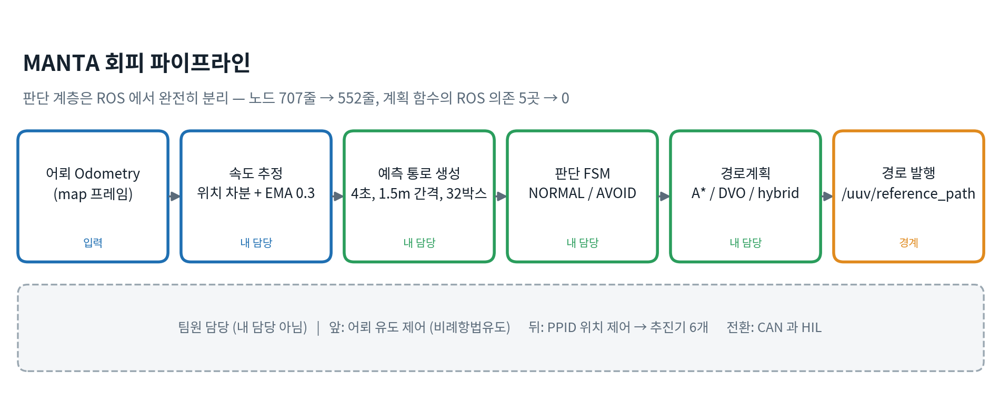
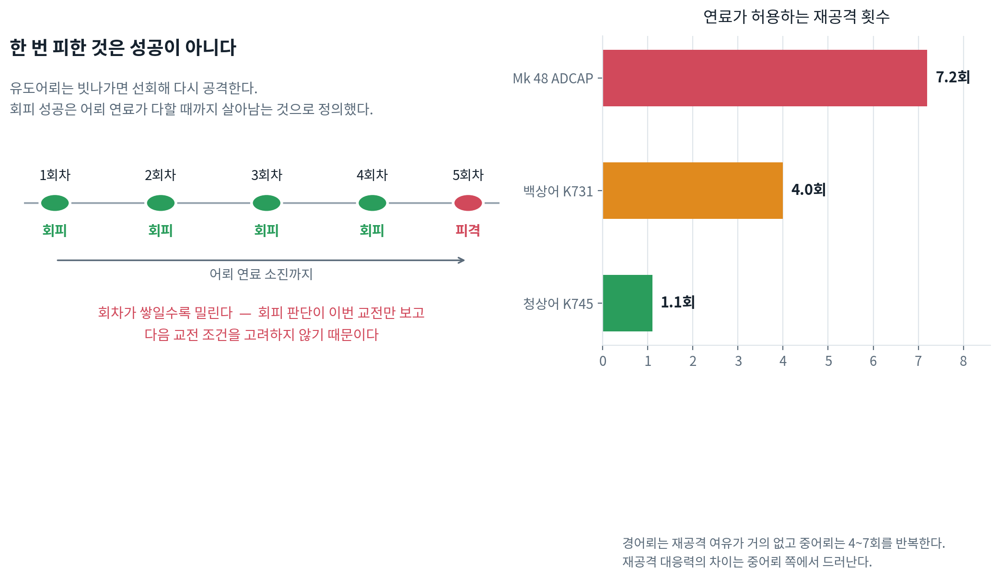
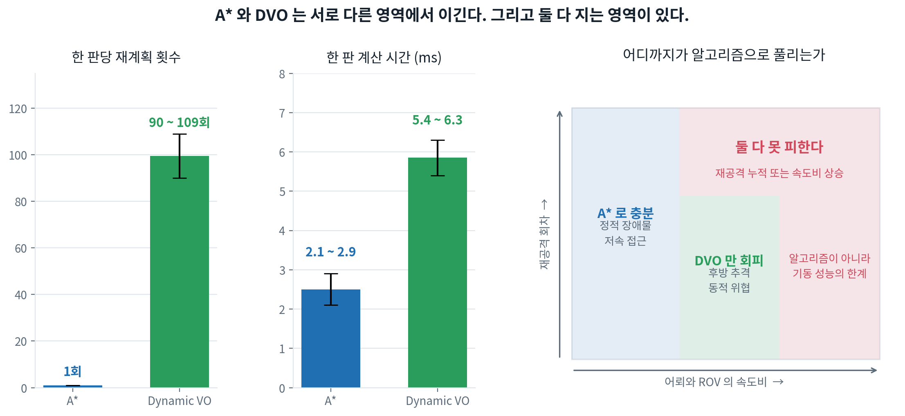

ROS 2, UNDERWATER AUTONOMOUS SYSTEM
MANTA 수중 무인체계 회피 판단과 경로계획
BlueROV2가 임무 경로를 주행하는 동안 유도어뢰의 미래 통로를 계산하고, A*와 Dynamic Velocity Obstacle의 회피 특성을 비교한 수중 시뮬레이션. 위협 판단, 경로계획, 실험 자동화 담당.
- 기간
- 2026.07–08
- 팀
- 5인 기능별 브랜치 개발
- 담당
- 회피 판단, 경로계획, 실험설계
- 기술
- ROS 2, C++17, Gazebo, RViz

01 / SCOPE
시스템과 담당 범위
팀은 어뢰 유도, PPID 위치제어, CAN/HIL, 회피계획으로 나누어 개발했다. 담당 모듈은 DataHub의 상태 스냅샷을 받아 회피 경로를 만들고 /uuv/reference_path로 전달하는 구간.
02 / THREAT MODEL
움직이는 위협의 미래 통로

5 Hz 표본 사이를 어뢰가 최대 1.9 m 이동할 수 있어 순간 거리만으로는 피격을 놓칠 수 있다. 두 틱 사이 상대운동의 최근접 시점을 계산해 구간 전체를 판정.
03 / COMPARISON
A*와 Dynamic VO 비교

| 항목 | A* | Dynamic VO |
|---|---|---|
| 계획 방식 | 예측 통로를 3D 격자 장애물로 처리 | 상대속도 기반 매 틱 국소 회피 |
| 평균 계획 시간 | 2.1–2.9 ms | 5.4–6.3 ms |
| 한 판 재계획 | 1회 | 90–109회 |
| 확인된 한계 | 후방 추격에서 무반응, 최근접 0.94 m | 계산량과 경로 변동 증가 |
결론은 단일 알고리즘의 우열이 아니라 접근 방향에 따른 선택 기준. 정면 위협은 A*의 고정 경로가 안정적이지만, 후방 추격은 상대속도를 계속 반영하는 DVO가 필요.
04 / EXPERIMENT
실험 조건과 자동화
실제 제원 기반 축척
잠수함 20 kt를 ROV 3.0 m/s에 대응시켜 속도, 시간, 거리 축척 유도.
어뢰 3종 속도 오차 5% 이내다방향 시나리오
정면, 후방, 측면, 대각 접근, 플래너와 유도모드 조합.
대표 조합 자동 실행, 판정무효 실험 차단
오래된 바이너리와 목표 미전달 상태를 실행 전에 검사.
계획 0회 결과 자동 제외재현 가능한 기록
셋업, 발사, 로그 수집, 판정을 한 스크립트에서 수행.
중단 뒤 이어서 실행 가능한 배치05 / ENGINEERING
구조와 성능 개선
- 코어 분리PlanningCore의 ROS 의존 5개에서 0개로 축소, 시간과 상태를 입력받는 순수 판단 구조
- 모듈 단순화planning_module.cpp 707줄에서 552줄로 축소
- 시각화 부하예측 박스 개별 발행을 CUBE_LIST 하나로 묶어 165 msg/s에서 5 msg/s로 감소
- 갱신 주기경로계획 성공 시에만 멈춰 있던 예측 통로를 상태 갱신마다 5 Hz로 갱신
- 이식 검토A* 약 212 KB, DVO 수 KB로 ESP32 메모리 요구량 사전 비교
97%
RViz 마커 발행량 감소
판단 주기와 시각화 부하 분리, 165 msg/s → 5 msg/s